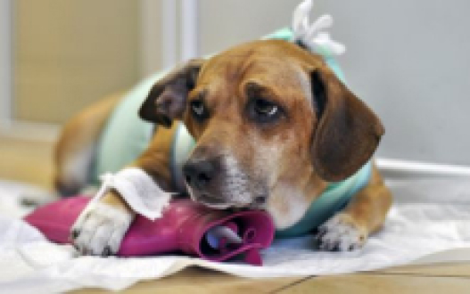

Опухоли у кошек и собак (новообразование или неоплазия) – это заболевание, при котором нормальные клетки тела начинают неконтролируемо делиться. Опухоль может появиться в любом органе, вырасти из любой ткани, из клеток кровеносной или лимфатической системы. На данный момент известно около 100 видов опухолей, и у каждой из них своя медиана выживаемости (Это то время, которое в среднем животное может прожить без лечения или с лечением), своя терапия и прогнозы. Наиболее часто новообразования встречаются у пожилых животных.Чаще всего владельцы отмечают снижение массы тела, увеличение лимфоузлов. У некоторых животных снижается аппетит, они становятся менее подвижными. При развитии опухолей могут быть метастазы, и важно определить, где находится первичная опухоль у кошки или собаки. Например, первичная опухоль может быть в печени, а метастазы в легких, почках, костном мозге. Существует термин: паранеопластический синдром, это состояние, ассоциированное с опухолью. К таким состояниям относится высокий уровень кальция в крови, снижение глюкозы, снижение общего белка. Множество симптомов новообразования не специфичны, и могут быть отнесены к другому заболеванию, зачастую для постановки диагноза необходимо:
- 1)сдать анализы крови;
- 2)анализы мочи;
- 3) сделать УЗИ сердца собаке или кошке;
- 4)сделать рентген животному в области грудной клетки;
- 5) провести биопсию регионарных лимфоузлов.
До сих неизвестно, по каким причинами развивается опухоль. Считается, что данное состояние могут вызывать вирусами, генетическая предрасположенность, канцерогены. Развитие некоторых опухолей можно предотвратить, например, риск развития опухолей молочной железы у собаки с кошек значительно снижается после стерилизации. Стерилизацию собак рекомендовано проводить в возрасте 6-9 месяцев, стерилизацию кошек – до первой течки. Для первичного приема у врача-онколога, нужна информация об условиях жизни животного, истории болезней, операциях, лечении, применяемых препаратах. Для эффективного лечения, прогноза, необходимо поставить окончательный диагноз. Для постановки диагноза используются методы: цитология, гистология. Цитология – это достаточно быстрый метод, для него необходимо небольшое количество материала, берется он иглой путем аспирации. Анализ готов в течение 2-3 часов. Однако цитология иногда не дает точного результата, например, в диагностике опухолей молочной железы у кошек и собак. Гистология – это более точный, достоверный метод. Для него необходимо выполнить биопсию – взять кусочек материала опухоли, далее его окрасить и исследовать. По структуре и характерным клеткам врач-патоморфолог может поставить окончательный диагноз, так же в своем заключении он указывает стадию новообразования. Для прогноза врач должен знать стадию заболевания, начало болезни, как животное отвечает на терапию, есть ли паранеопластические синдромы, так же обязательно должно быть заключение от гистолога со стадией опухоли (grade). Лечение и прогнозы будут индивидуальны у каждого пациента. Однако мы лечим животное, а не опухоль. Это значит, необходим периодический мониторинг, чтобы определить, требуется ли животному ли дополнительное лечение. Некоторым животное с онкологическими заболеваниями требуется специальная диета, т.к. на фоне применения химиотерапии, возможна постоянная рвота или понос. Такие животные должны обязательно получать полноценный белок, ненасыщенные жирные кислоты, легко усвояемые углеводы. Обсудить диету и выбрать варианты можно на приеме у врача.